This page displays each of the possible guests in TamaHotel, and tells you how each can be obtained.
Note that the requirements are based on the previous day's actions only.
Note that if a special guest's requirements are fulfilled, normal guests will not appear.
All special guests also require you to take good care of your guests.
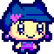
MELODYTCHI: Take good care of your guests. She also appears as your first guest!
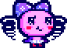
MAKIKO: Take good care of your guests.
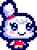
KIRAMOTCHI: Take good care of your guests.
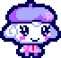
PIANITCHI: Take good care of your guests.
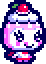
DECORATCHI: Take good care of your guests.
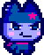
KUROMAMETCHI: Take good care of your guests.
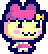
CHAMAMETCHI: Take average care of your guests.
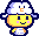
WATAWATATCHI: Take average care of your guests.
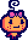
IMOTCHI: Take average care of your guests.
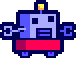
ANDROTCHI: Take average care of your guests.
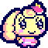
COFFRETCHI: Take average care of your guests.
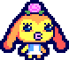
ANEMORIRITCHI: Take average care of your guests.
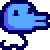
NYOROTCHI: Take bad care of your guests.
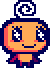
MEMETCHI: Take bad care of your guests.
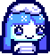
YUKINKOTCHI: Take bad care of your guests.
GOZARUTCHI: Take bad care of your guests.
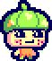
UWASATCHI: Take bad care of your guests.
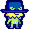
BLACK HAT: Take bad care of your guests.
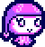
MY FRIEND: Special guest! Have 5 good care guests in your hotel without ever having a guest leave while playing on Needy Mode.
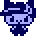
NANO MELODYTCHI: Special guest! Only feed Melodytchi Rice and Candy.
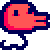
U.S. NYOROTCHI: Special guest! Only feed Nyorotchi Cheeseburgers and French Fries when he asks for a meal.
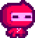
AKA GOZARUTCHI: Special guest! Only feed Gozarutchi Coca-Cola when he asks for a snack.
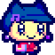
INVESTIGATOR MELODYTCHI: Special guest! Display Melodytchi's name for a total of at least 1 minute.
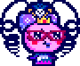
JIGOKU QUEEN: Special guest! Only feed Makiko Tacos when she asks for a meal.
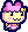
SUPER CHAMA GIRL: Special guest! Have 4 guests in your hotel, with one of them being Chamametchi.
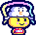
WATAWATA KAGUYA HIME: Special guest! Click on the night sky while Watawatatchi is asleep.
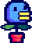
KUSATCHI: Special guest! Feed your guests Cheeseburgers at least 5 times.
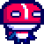
MASKTCHI: Special guest! Have Gozarutchi in your hotel.
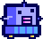
YOUNG ANDROTCHI: Special guest! Only feed Androtchi Spaghetti when he asks for a meal.
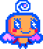
URA MEMETCHI: Special guest! Only feed Memetchi Doughnuts and Blue Souffles when she asks for a snack.
???: Special guest! Feed your guests Corn at least 5 times.
???: Special guest! Feed your guests Water at least 5 times.
???: Special guest! Feed your guests Coca-Cola at least 3 times.
???: Special guest! Have Maidtchi fulfill 3 service requests each within 5 seconds of each other.
???: Special guest! Display service names for a total of at least 2 minutes.